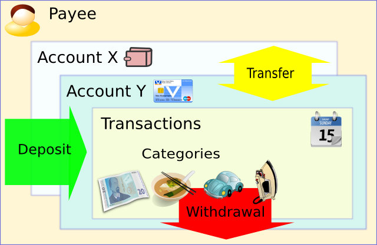

Using Money Manager Ex
Importing
Exporting
Money Manager Exª is a free, easy-to-use personal finance software to manage your money. It primarily helps organize one's finances and keeps track of where, when and how the money goes and comes.
Think of Money Manager Ex (MMEX) as a computer checkbook which enables you to balance your accounts, organize, manage and generate reports for your finances.
It is also a great way to keep abreast of your financial worth.
The primary goal of MMEX is to simplify the process of tracking financial information without making it complex like some of the popular personal finance software packages.
The purpose of this manual is to give you some basic instructions for using MMEX. This instruction manual will evolve as the program evolves. So check the help system with each update and see what's new and how to better utilize MMEX.
- Always backup your .mmb or .emb database
file regularly.
- If upgrading to a new version of MMEX, make sure
you backup your .mmb or .emb database file before doing so.
Becoming organized financially requires some
amount of discipline. Financial management becomes complicated
because there is no clear understanding of cash flow or an idea of
income against expenses. Debt is usually what results when expenses
exceed income.
The first step towards better financial
organization is keeping good records. Only when there is recognition
of the expenses being made on a day to day basis will there be an
understanding on how to cut back.
Did you realize you spent $600 in buying DVD
movies last year? How many times did you watch them? Do you think now
that the $600 would have been better spent on the unexpected
maintenance on the auto that came up yesterday? Of course there is no
right or wrong answer to how you should spend your money. After all,
it is you who earned that money and the right to spend it whichever
way you see fit. But you can always make your money work harder for
you. You want better "bang for your buck/lira/pound".
Here's
where personal finance software comes in. They help you slice/dice
the financial data to give you better insight into what is going on.
Always remember the software can only be as good as the data it has
to process. Garbage In Garbage Out. But if you have started thinking
of even using a Personal finance software you are well on your way to
making every dollar count.
Read on how to work with Money Manager Ex.
Money Manager Ex models the real financial world through concepts of transactions. A transaction is a financial event where money/services are exchanged. Such transactions could be making a payment towards a loan, buying a car, eating out at a restaurant and so on. Each transaction is associated with an account and a category.

An Account is a record
of what you either own or owe.
For example, your checking account
is a record of the cash deposited in the bank, that is available for
writing checks, making ATM withdrawals or for making debit
transactions using a debit card. A credit card account is a record of
the money you owe to a credit card company when you make a payment
using the credit card. All transactions either increase or decrease
the balance in one or more accounts.
A category is a classification
of where the money comes from or goes to.
For example, your salary
is the money you earn from your job and is a type of income. The
money received from an investment as interest is also a type of
income. These would have a category
of Income, with subcategories
of Salary and Investment Interest.
If you
wanted to find out the cost of eating out, how much you spend on
groceries, how much is spent on fuel for your car and how much your
car is costing you in maintenance, you would create expense
categories and subcategories as follows:
Create the category of
Food with subcategories of Groceries and Dining Out,
and for the car set up a category of Car with
subcategories of Fuel and Maintenance.
Categories make it possible to track how you earn and spend money.
We can also look at MMEX as a system that
records the flow and amount of money you have.
The Accounts record
where the money is. Money comes in as deposits (Income), goes
out as withdrawals (expense), and money moving within the
system as transfers. (credit cards payments)
For example,
money is put into your savings account form your Employer as a
salary. Money goes out of your Credit card account when you purchase
groceries from the Supermarket with your credit card. Money
transfers from your savings to your credit card when you repay your
credit card. Money also goes out when making cash payments for your
groceries at the Corner Store.
This is where MMEX also
requires Payees, where the payees are the Supermarket, Corner
Store and Employer.
A Payee is who the money comes from or goes to.
To make MMEX work effectively, it is important to record all transactions made by you into the appropriate accounts. Even if you do not have the habit of carefully entering transactions, you should enter transactions when you get your monthly statement from your credit card company or bank.
Once you enter your transactions, MMEX can help provide some useful information to you. For example, it will tell you what the current balance on your accounts are. It will provide information on how much you are spending versus how much you are earning. All this knowledge would help you make better decisions.
To begin working with Money Manager, you should start by creating a new database file. All the transactions you record with MMEX are stored in a database file (file with an extension of .mmb) on your hard disk. This file contains all the components- accounts, categories, transactions that make up your financial status.
Although it is possible to create more than one MMEX data file, it isn't usually necessary. One file can hold all your transactions and accounts. There is no limit to the number of accounts or transactions that you can have in your database file. The only time it might make sense to have more than one database file is if you use MMEX to organize your personal finance and the finances of the small business firm you have. Or if you share the computer with another person and your maintain separate financial records from them.
To create a new database file, on the Menu, Select File->New Database.
This will prompt you to specify the location
of the .mmb file. Once you select the location, and create a name for
your file, a new database is created. The New Database Wizard will be
displayed to help you finalize the new database and assist in
creating your first account. The database
name will be displayed on the title bar which helps remind you which
database file is open.
The new .mmb
database file is not encrypted.
Encrypting your database file.
The database can now be encrypted as follows: on the Menu, Select File->Save Database As
Select your location, and select your .mmb file or create a new name for your database.
Change the Save As Type: to Encrypted MMB Files (*.emb), then Save
Enter a password for your file – You will need the password when opening the database file.
Tips:
Remember to make backups of your .mmb or .emb database files.
Database
file is not encrypted:
That means anyone else having the
proper know how, can actually open the file and read the contents.
So make sure that if you are storing any sensitive financial
information, it is properly guarded.
For encrypted database files: Remember your password.
Right after you create a new database file, the first thing to do is to create a new account.
Currently, MMEX supports three types of accounts.
“Checking”
Account: Also
known as Bank Account, supports three kinds of transactions.
These
are withdrawal, deposit and transfers. These kinds of accounts cover
common bank accounts, such as checking accounts, savings accounts,
and credit card accounts.
“Term” Accounts:
These accounts also, supports three kinds of
transactions.
These kinds of accounts cover specialized accounts
such as Cash Term Accounts, Bank Mortgage accounts, Loan accounts,
or investment accounts with regular income or expenditure that you
need to keep track of. These accounts have their own balance section
on the Home Page.
"Investment"
Account: This is a type of account allows you to track stocks
and other investments you may own.
To properly setup
accounts, you should have balance information for the accounts you
want to add to MMEX. You can get this information from your most
recent bank, investment and credit card statements.
To create a new account, on the Menu, Select
Accounts->New Account.
This will bring up the Add Account
Wizard. The wizard will assist in
collecting the important information of the Name and Type of Account.
The Type is not changeable, but the name can changed when editing
account information.
Account
Name: This is a required field. The
recommendation is to name your accounts uniquely and in relation to
real world accounts.
Example: With CitiBank, we have a Savings
account and a credit card Visa account. You could name your accounts
as "CitiBank Savings" and “Citibank Visa”.
To track additional information about this account, optionally you can enter your account details such as Account Number, Held At, Website, Contact info and Access Info. You can enter additional notes about the account in the notes field.
Most accounts have some kind of balance in
them, for example say in a credit card account, you have a current
balance of $2304.67, you could put that value in the initial balance
field. Going forward you only need to add transactions beyond that
date when you had the balance.
Accounts have status
associated with them which could be "Open" or "Closed".
Closed accounts are just that. They are no longer active. Setting
this status is just a way to de-clutter your view in your tree view
navigation pane. By changing the View Options on the Menu,
Tools->Options, you can hide the closed accounts.
Currency:
This is initially set to the
database currency setting. This is initially set when creating the
database.
You can set the currency that is associated with
your account. MMEX comes with a default set of currencies which you
can use, to correspond to your countries currency settings.
Example:
If you have an account in a different country, changing the currency
for the account will allow you to track the value for that account in
your own country.
You also can mark accounts as a 'Favorite Account'. This again is used to change the accounts that are visible in the navigation bar.
The Term Account is similar to Checking Accounts with the exception that they appear in their own section on the home page and can be shown or hidden for normal day usage. For a better explanation see the account setup example.
The other type of account that MMEX supports is an "Investment" Account. These accounts are store information on financial institutions where you hold any type of stock/bonds/mutual funds investments.
Account Setup
Example:
We have a savings
account with $1250, a check account with $500, a MasterCard owing
$250, a Visa Card owing $475, a home mortgage loan of $230,965 and an
education fund to send the children to college in the future
currently at $5000 earning interest.
We would set up the following
accounts:
|
Account Type |
Account Name |
Initial Balance |
|
Check/Savings |
Savings |
$1,250.00 |
|
|
Check |
$500.00 |
|
|
MasterCard |
-$250.00 |
|
|
Visa Card |
-$475.00 |
|
Term |
Home Mortgage |
-$230,965.00 |
|
|
Education Fund |
$5,000.00 |
On the home page the balances would be
$1025 for Bank accounts, and $-225,965 for Term Accounts
When a payment is made from your Savings Account to your MasterCard with a Transfer Transaction the balance on the home page remains the same. When a payment is made from your savings to your home mortgage, the balance on the home page will reflect the payment. Now you can determine the amount of money you have on a day to day basis. Regular payments can also be set up from your savings account to your mortgage account using Repeating Transactions.
Once you have created an account, you can edit any of the account information fields by selecting the account name in the navigation pane and then right click to bring up the pop-up menu. Select "Edit Account" to bring up the account information dialog. Edit the information and then click "OK" to save the account information.
Once you have created a new account, one can
start entering transactions. Select the account you want to enter
transactions into by left clicking the account in the navigation
tree. This opens the register of transactions associated with this
account. To create a new transaction, click the "New"
button to open up the New/Edit Transaction dialog. Enter the details
associated with this transaction. Start by selecting the type of
transaction from "Withdrawal", "Deposit" or
"Transfer". Then select the Payee, Category, the
transaction date, number, any notes and then the transaction amount.
Press "OK" button to save the transaction.
Here are
some notes on the fields associated with the transaction
dialog.
Transaction
Types:
Withdrawal: is one where one makes a payment and is an expense.
Deposit: is one where money is received and is an income.
Transfer: is one where a
withdrawal is made from one account and is deposited into another
account.
This type of transaction is not included in
Income/Expense calculations.
Transfer transactions activates the Advanced button. Used for advanced situations when we require the amount as a withdrawal, to be different to the amount as a deposit, or vice-verse r. (That is why it is advanced.)
Payee: This is a person or an organization to whom the money goes or comes from.
Clicking the payee button opens up the payee dialog. You can select the payee from that dialog or create a new payee.
Category: Category selects the kind of expense/income for the transaction.
Clicking the category button opens up the category dialog. You can select the category from the dialog or create a new category.
Transaction Number: is a field
to enter any kind of number associated with the transaction like
check number.
Transaction Status: Select from
"Unreconciled", "Reconciled", "Void",
"Flag for Followup" status options. This marks the
transaction into various states.
Unreconciled: When you enter a transaction, it initially is in the state of "Unreconciled". Which means the transaction has not been reconciled with your bank/credit card company's balance.
Reconciled: Once the transaction is checked and verified with a credit card company's balance information, it can be marked as reconciled.
Void: If you entered a transaction that later became invalid or you canceled the transaction, instead of deleting the transaction you can also mark it as void so you have a record of the transaction.
Flag For Followup: This status marks transactions as needing more action. For example, you receive a balance statement from the financial institution and you notice that the transaction amount is different between what you recorded and what is in the statement. You can mark it as flag for follow up so that you can followup with the financial institution.
To edit an existing transaction, simply select the transaction and then click the edit button. You can also alternatively double-click the selected transaction to open the transaction dialog. Another alternative way is to press enter on the selection to open the transaction dialog. Make the changes and click OK to save the changes.
Transactions that are entered into MMEX are considered unreconciled. This means that they have not been verified with the statement from the financial institution. Once the statement comes or by viewing an online bank statement a transaction can be considered reconciled if the details of the transaction match that from the financial institution. Then the transaction can be marked as reconciled. By marking these transactions you can keep track whether the transactions you are entering match the actual transactions. In MMEX, reconciled and unreconciled transactions are shown by different icons.
Tip:To mark a transaction as reconciled, just select the transaction and hit the 'r' or 'R' key. To mark a transaction as unreconciled, just select the transaction and hit the 'u' or 'U' key.
Some transactions might have some issues that you want to follow up on. Mark these as with status of flag for followup. This is indicated in MMEX with a different icon.
Tip:
To mark a transaction as requiring followup, just select the transaction and hit the 'f or 'F' key.
Payees indicate real world entities to whom payments/expenses are made or from whom deposits are received. You can manage Payees in MMEX by opening the Menu, Tools -> Organize Payees.
Once the payee dialog opens you can add new payees, by typing the name into the text box and pressing the Add button. You can also select the payee in the list and edit the name or delete the payee.
Note: You cannot delete payees which
are being used by any transactions.
To delete a payee, ensure that
no transactions use this payee. This can be done by editing the
transaction and changing the payee, or deleting the transaction. When
all links to the payee are removed, you can delete the payee.
Categories indicate where the money is going
or coming from.
You can manage Categories in MMEX by opening the
Menu, Tools -> Organize Categories.
Once the category
dialog opens, you can add new categories and subcategories.
To add a new Category:
Select
Categories at the root of the tree (At the top), then type the
new category name into the text box and pressing the Add
button. The new category will appear at the bottom, and will be
resorted when the dialog box is re-opened.
To add a new Subcategory:
Select
the category that you wish the subcategory to belong to, then type
the new subcategory name into the text box and pressing the Add
button.
You can also change the names by selecting the category/subcategory in the list , modify the name in the text box and use the Edit button. Use a similar action to delete the category/subcategory in the list.
Note: You cannot delete categories
which are being used by any transactions.
Ensure that no
transactions use this category/subcategory, then you can delete the
category/subcategory.
MMEX can import from a wide variety of
formats. One of them is a fixed format CSV file. This file format
exactly matches the CSV format that MMEX can export. So it can be
useful to move data from one .mmb database file to another .mmb
database file. To easily see the format of the CSV file, you can try
exporting an account to a CSV file and then analyzing the format
created.
The general format is as follows:
Date
- Date of the transaction (Displayed in the format specified in
Options->DateFormat)
Payee - To whom the
transaction was made. In the case of a transfer transaction, this
indicates the name of the account from which the transfer was made or
to the account the transfer was made.
Transaction Type
- This can either be "Withdrawal" or
"Deposit"
Amount - The transaction
amount as a positive value
Category - The category
of the transaction
SubCategory - The subcategory of
the transaction if any (otherwise blank)
Number -
Transaction Number
Notes - Transaction Notes
Note
that the transactions from a CSV file can only be imported into a
single MMEX account.
Quicken Interchange Format (QIF) is an open
specification for reading and writing financial data to media (i.e.
files). A QIF file typically has the following structure:
!Type:type
identifier string
[single character line code]Literal String
Data
...
^
[single character line code]Literal String
Data
...
^
Each record ends with a ^ (caret).
See
example QIF transaction
!Type:Bank Header
D6/ 1/94 Date
T-1,000.00 Amount
N1005 number
PBank Of Mortgage Payee
^
End of transaction
QIF is older than Open Financial Exchange
(OFX). The inability to reconcile imported transactions against the
current account information is one of the primary shortcomings of
QIF. It is commonly supported by financial institutions to supply
downloadable information to account holders.
MMEX can import
transactions from specific types of QIF formats into an account.
The types are the following: (You can find the type of QIF by
opening in a text editor)
!Type:Bank Bank account transactions
!Type:Cash Cash account transactions
!Type:CCard Credit card
account transactions
Important Note (1): The date
format option has to match that of the date format in the QIF file,
otherwise, date parsing by MMEX will fail and will result in
transactions having incorrect dates.
Important Note (2):
After importing from QIF, all transactions will have a "Follow
Flag" as it its status. You can mark all transactions with this
flag using the bulk status setting commands using the right click
menu in the account view.
MMEX can also import from CSV files that are
exported from the Money Manager.NET program. This is to primarily
help users of that program migrate to using MMEX.
The general
format is as follows:
Date
- Date of the transaction (Displayed in the
format specified in Options->DateFormat)
Payee
- To whom the transaction was made. In the case
of a transfer transaction, this indicates the name of the account
from which the transfer was made or to the account the transfer was
made.
Amount
- The transaction amount. If it is positive, it
is considered a deposit, if it is negative, it is a withdrawal.
Number -
Transaction Number
Status
- Transaction status
Category
- The category of the transaction. This is
actually a compound string of the type "Category:SubCategory"
Notes
- Transaction Notes
Note that the
transactions from a CSV file can only be imported into a single MMEX
account.
To alleviate the problem of users having to
preformat their bank transaction CSV files into the fixed format MMEX
requires, MMEX also allows users to import CSV files where the order
of fields is completely freeform. To use this importer, select the
account you want to import into and then select the order of fields
in the CSV file by picking and choosing from the list of possible
fields. MMEX will now import the CSV file using the format
information specified by the user. MMEX can import from a wide
variety of formats. One of them is a fixed format CSV file. This file
format exactly matches the CSV format that MMEX can export. So it can
be useful to move data from one .mmb database file to another .mmb
database file. To easily see the format of the CSV file, you can try
exporting an account to a CSV file and then analyzing the format
created.
The CSV field options are as follows:
Date
- Date of the transaction (In the format specified in
Options->DateFormat)
Payee - To whom the
transaction was made. In the case of a transfer transaction, this
indicates the name of the account from which the transfer was made or
to the account the transfer was made.
Amount (+/-) -
The transaction amount. If it is a positive value it is a deposit,
negative value is a withdrawal.
Category - The
category of the transaction
SubCategory - The
subcategory of the transaction
Notes - Transaction
Notes
Number - Transaction Number
Withdrawal
- An +ive amount that is considered as a withdrawal. (Do not use if
specifying Amount (+/-))
Deposit - An +ive amount
that is considered as a deposit. (Do not use if specifying Amount
(+/-))
Don't Care - Ignore this field
Note
that the transactions from a CSV file can only be imported into a
single MMEX account.
Important Note (1): The date
format option has to match that of the date format in the QIF file,
otherwise, date parsing by MMEX will fail and will result in
transactions having incorrect dates.
Important Note (2):
After importing from QIF, all transactions will have a "Follow
Flag" as it its status. You can mark all transactions with this
flag using the bulk status setting commands using the right click
menu in the account view.
When creating your CSV file be sure that you remove the commas from your deposits and withdrawals. This can be done easily through a program such as Excel or OpenOffice Calc.
Or you can change the delimiter to be used by MMEX by choosing Tools > Options and changing the "Import/Export Settings" in the "General" option settings.
You do not need to include balance values in your CSV File.
Note that the transactions from a CSV file can only be imported into a single MMEX account.
MMEX can export to a fixed format CSV file.
This file format exactly matches the CSV format that MMEX can import.
So it can be useful to move data from one .mmb database file to
another .mmb database file. To easily see the format of the CSV file,
you can try exporting an account to a CSV file and then analyzing the
format created.
The general format is as follows:
Date
- Date of the transaction (Displayed in the format specified in
Options->DateFormat)
Payee - To whom the
transaction was made. In the case of a transfer transaction, this
indicates the name of the account from which the transfer was made or
to the account the transfer was made.
Transaction Type
- This can either be "Withdrawal" or
"Deposit"
Amount - The transaction
amount as a positive value
Category - The category
of the transaction
SubCategory - The subcategory of
the transaction if any (otherwise blank)
Notes -
Transaction Notes
Note that the transactions from an account
can be exported to a single CSV file.
Using MMEX it is possible to track
stocks/mutual funds investments.
- First create a new
Investment account. To do this, select the new account option and in
the 'Account Type' select 'Investment'.
- Then select the
stocks option in the Tree view and click the "New Stock
Investment" button. Fill in the details to add a new stock
investment.
See more details.
To
update the price of your stock holding, edit the saved stock
investment and change the current stock price.
MMEX allows you to put reminders for recurring transactions. Do this via the Repeating Transactions tree item. The upcoming reminders for bills or deposits in the upcoming 2 weeks is displayed in the home page.
MMEX allows you to track fixed assets like cars, houses, land and others. Each asset can have its value appreciate by a certain rate per year, depreciate by a certain rate per year, or not change in value. The total assets are added to your total financial worth.
MMEX allows you to search for transactions that meet certain criteria. This can be done using the transaction filter option. The resulting list of transactions can be printed or saved as an HTML file.
MMEX allows you to setup a budget for a year
and compare how you did versus your budget. To setup a budget click
on the 'Budgeting' tree node and add a budget year. Once the year has
been added, select the year and edit the amounts for each category.
This becomes the budget for the year.
Using the reports
under 'Budgeting' it is possible to compare how you spent the money
versus your actual budget.
MMEX allows a variety of reports. Select the appropriate report under the Reports node in the navigation tree. Some reports require some user input, some do not. Once you view a report, you can print the report using the print options in the menu.
The reports for: Last Financial Year reports
and Current financial year, are reports covering a 12 month period.
The start of the financial year can be changed by using the menu
Tools -> Options then selecting the Others panel.
MMEX supports printing of all reports that can be viewed. The print options are available under the menu, File->Print.
You can modify some run time behavior of MMEX by changing the options in the Options Dialog.
Access from the menu with Tools->Options
|
General Panel |
|
|
Base Currency: |
The base currency setting is used to display the total of all accounts. |
|
Date Format: |
The date format setting is used to control how dates should be displayed and also how dates should be parsed when importing QIF, CSV files. |
|
CSV Limiter |
This is used as the delimiting character when parsing CSV files. This is useful to modify from the default ',' when dealing with currencies that use ',' to denote decimal points in amounts. |
|
User Name |
This field is displayed as the title on the home page. |
|
Language |
This is the language used by the MMEX GUI. MMEX might require a restart before all GUI elements have the new language. |
|
View Options Panel |
|
|
Accounts Visible |
This determines which accounts are seen in the Navigation tree. |
|
Transactions Visible |
This determines which transactions are seen in the Account View. |
|
Tree View |
Will expand the navigation tree's Bank accounts when the home page is refreshed |
|
Tree View |
Will expand the navigation tree's Term accounts when the home page is refreshed |
|
Home Page |
Will show all the Bank accounts when the home page is refreshed. |
|
Home Page |
Will show all the Term accounts when the home page is refreshed. |
|
Colors Panel |
Allows the user to modify colors in MMEX to suit his/her style. |
|
Others Panel |
|
|
Financial Year Settings |
Sets the start Day and Month for a 12 month period for Financial Year Reports |
|
Backup Database |
MMEX will make a backup of the file before opening it. There will be only one backup made and it will be overwritten next time MMEX is opened. So if you want to keep a certain backup permanently, you need to do a manual backup. |
|
Stock Quote Link |
For stock investments, given a URL, MMEX can show the page automatically when the webpage button is clicked. Specify the URL here. The default is for Google's finance. |
If you are a C++ expert, by helping extend MMEX developing code.
If you are really very happy because you saved a lot of money by using MMEX, you can donate to the MMEX project.
Originally I developed a personal finance software called Money Manager. It was written in .NET and more of a learning excercise than serious software development. It grew far beyond the original design. The software was frozen and work began on a new version which had a similar user interface and features, but written in C++.
Usually Microsoft names their second version of their improved software APIs with an Ex extension as in doSomething() and doSomethingEx(). So I just followed the model and tacked on a 'Ex' to the end.
Yes, your data is completely safe. And, No, .mmb file is not proprietary. MMEX uses SQLite databases to store user data. That means that the .mmb file is a regular SQLite database. SQLite is one of the smallest, free relational database systems around and there are tons of tools to open and access sqlite databases. SQLiteSpy and SQLite Browser (http://sqlitebrowser.sourceforge.net/) are two such utilities. Once you open the database using these tools, you can do anything you want with the data.
Yes, MMEX is a portable application which means ability to run without installation, for example, from USB flash drive. If MMEX finds mmexini.db3 in its folder, it assumes portable mode. Copy mmex's files to USB Key and copy yours mmexini.db3 to mmex's folder on that drive.
To make MMEX portable:
1. On Windows (assume F:\ is USB flash drive)
Copy "C:\Program
Files\MoneyManagerEx" to F:\
Copy
"%APPDATA%\MoneyManagerEx\mmexini.db3" to
F:\MoneyManagerEx
Copy your database file to any folder on
F:\
2. On Unix (assume /media/disk is mounted USB flash drive)
Compile mmex from sources as usually, and
make install prefix=/media/disk
cp ~/.mmex/mmexini.db3 /media/disk/mmex/share/mmex
or if you want to copy mmex which has already installed in /usr
cp /usr/bin/mmex
/media/disk/mmex/bin
cp /usr/share/mmex
/media/disk/mmex/share
cp /usr/share/doc/mmex
/media/disk/mmex/share/doc
cp ~/.mmex/mmexini.db3
/media/disk/mmex/share/mmex
Generally, with any closed source program, you have to depend upon the vendor's word regarding safety of the data. But with MMEX being open source, you can verify this claim yourself. Even if you are not a C++ expert, you can rest assured that anyone can access the source code at any time and verify the legitimacy of MMEX's intentions. MMEX does not connect to the internet unless you explicitly asked it do so (like checking for an update etc).
To print a statement with transactions from any arbitrary set of criteria, use the transaction filter to select the transactions you want and then do a print from the menu.